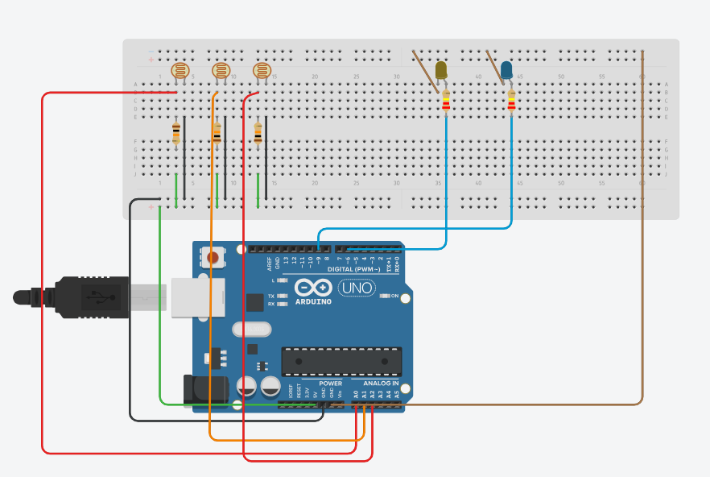

Project Overview
The Smart Auto High Beam Cutoff System is an intelligent vehicle safety solution designed to improve visibility and reduce accidents during night driving. The system automatically switches the vehicle's headlight from high beam to low beam when an oncoming vehicle is detected.
Problem Statement
High-beam headlights from oncoming vehicles cause glare during night driving, reducing visibility and increasing the risk of accidents. Drivers may forget to manually switch between high and low beams, creating safety hazards. This project aims to automatically detect incoming vehicle lights and adjust headlight intensity to improve road safety and driver comfort.
Solution
Developed a Smart Auto High Beam Cutoff System using Arduino Nano and light sensors to automatically switch headlights from high beam to low beam when detecting oncoming vehicles,reducing glare and enhancing nighttime driving safety.
Objectives
- Improves roadsafety during nighttime driving.
- Reduces glare and enhances nighttime driving safety.
- Automatically switches between high and low beam headlights.
- Minimize driver distraction.
- Compact and cost-effective design for easy integration into vehicles.
Technologies Used
Key Features
- Automatic detection of oncoming vehicles
- Seamless switching between high and low beam headlights
- Improved nighttime driving safety
- Minimized driver distraction
- Compact and cost-effective design
Project workflow
- Detect oncoming vehicles headlights
- Measure light intensity using LDR
- Send sensor data to Arduino Nano
- Process data and determine headlight mode
- Control headlight switching mechanism
- Restore default headlight settings
Circuit Diagram

Expected Outcomes
The Smart Auto High Beam Cutoff System enhances nighttime driving safety by automatically adjusting headlight intensity based on oncoming vehicle detection. This project demonstrates the potential of intelligent vehicle safety solutions to reduce accidents and improve driver comfort.
Future Enhancements
- AI based vehicle detection
- Adaptive lighting control
- IoT monitoring and analytics
- Integration with smart vehicle systems
Skills Gained
- Embedded Systems Development
- Arduino Programming
- Sensor Integration and Data Processing
- Electronics Circuit Design
- Problem-Solving and Critical Thinking